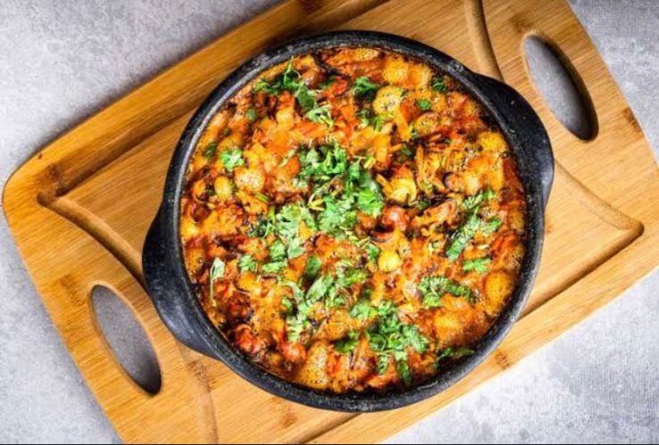

FALÉSIAS
Essas falésias são formadas por camadas de areia e argila que
foram esculpidas pela ação do vento e da água ao longo do
tempo. Elas se destacam por suas cores vibrantes, variando do
vermelho ao branco, e formam um contraste marcante com o
azul intenso do mar e o verde da vegetação ao redor.

A culinaria do municipio de Roteiro-Al,se